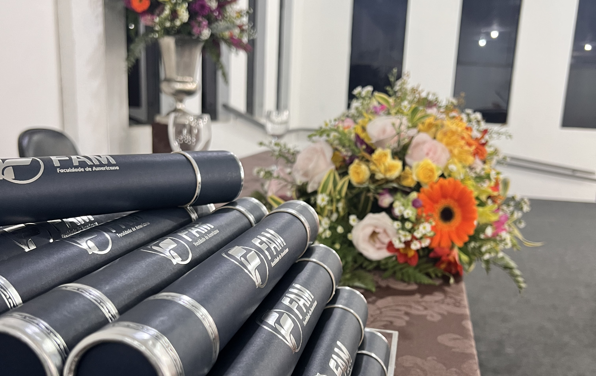

Conecte-se com a FAM, ex-aluno(a)!

Como ex-aluno(a), você é parte vital da história e do crescimento da FAM. Queremos continuar caminhando juntos, criando novas oportunidades, inspirando mudanças e celebrando conquistas. Sua jornada não apenas conta histórias de sucesso, mas também ajuda a construir um futuro mais forte e conectado para todos os que já passaram e ainda passarão pela FAM.

Por que participar?
Queremos saber sua trajetória profissional após a FAM
Inspire novas gerações de alunos
Fortaleça nossa comunidade com suas ideias
Sua História Importa!
Conte-nos sobre suas conquistas, momentos marcantes na FAM e como sua experiência aqui impactou sua vida. Sua participação é fundamental para criar iniciativas que fazem a diferença.